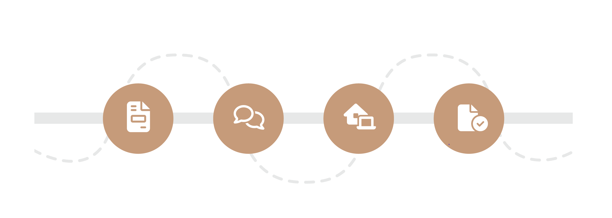
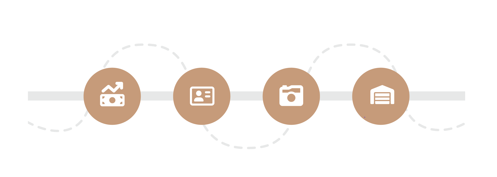

<div class="about-us">
  <div class="about-us__content">
    <section class="vision-and-message">
      <h2 class="diff-font">الرؤية والرسالة</h2>
      <div class="vision">
        <h4 class="diff-font">الرؤية</h4>
        <p>
          نطمح إلى أن نكون العلامة التجارية الرائدة في إدارة العقارات والإيجارات
          قصيرة الأجل في منطقة الشرق الأوسط وشمال إفريقيا، من خلال تقديم خدمات
          متميزة بجودة عالمية.
        </p>
      </div>
      <div class="message">
        <h4 class="diff-font">الرسالة</h4>
        <p>
          نسعى لتقديم حلول مبتكرة ومخصصة لأصحاب العقارات والضيوف، مع ضمان تقديم
          خدمات تتجاوز التوقعات، ووضع معيار جديد للتميز في مجال الإيجارات
          العقارية قصيرة الأجل.
        </p>
      </div>
    </section>

    <section class="why-ksa">
      <h2 class="diff-font">لماذا الاستثمار في المملكة العربية السعودية؟</h2>
      <p>
        يتماشى وجودنا في المملكة مع <b>رؤية 2030</b> التي تهدف إلى تعزيز القطاع
        السياحي و الثقافي. الطلب المتزايد على الشقق المفروشة جعل الإيجارات قصيرة
        الأجل فرصة استثمارية جذابة، خاصة مع ارتفاع الطلب في المدن الكبرى مثل
        الرياض
      </p>
      <div class="images">
        <div
          *ngFor="let image of whyKsaImages"
          [style.background]="'url(' + image + ')'"
        ></div>
      </div>
    </section>

    <section class="short-term-rent">
      <h2 class="diff-font">لماذا يختار الزوار الإيجارات قصيرة الأجل؟</h2>
      <p>
        مع نمو قطاع السياحة، يتزايد الطلب على الفنادق والشقق المفروشة، مما يتيح
        لأصحاب الشقق فرصة تأجيرها لفترات قصيرة لتلبية الطلب المتزايد وتحقيق
        أرباح إضافية مع W لإدارة الاملاك
      </p>

      <p>
        نحن شركة متخصصة تمتلك الخبرة والمعرفة لتلبية احتياجات هذا القطاع
        المتنامي. نركز بشكل خاص على مدينت الرياض حيث يرتفع الطلب على الإقامات
        المريحة وعالية الجودة
      </p>

      <p>
        فيما يلي بعض الأسباب التي تجعل الإيجارات قصيرة الأجل خيارًا مثاليًا
        مقارنة بالإقامة في الفنادق في المملكة العربية السعودية، وكيفية الاستفادة
        من هذا التوجه للاستثمار:
      </p>
      <div class="icons">
        <div class="item" *ngFor="let item of rent; let i = index">
          
          <div class="images-list" *ngIf="i === 0">
            
          </div>
          <span>{{ item }}</span>
        </div>
      </div>
    </section>

    <section class="why-short-term-rent">
      <h2 class="diff-font">لأصحاب العقارات لماذا ننصح بالايجار قصير الأجل؟</h2>
      <div class="icons">
        <div class="item" *ngFor="let item of ownersRent; let i = index">
          <div class="img">
            
          </div>
          <span>{{ item }}</span>
        </div>
      </div>

      <div class="chart">
        <p-chart
          type="bar"
          [data]="basicData"
          [options]="basicOptions"
        ></p-chart>
        <h3>قصير الأجل <span>مقابل</span> الأيجار السنوي</h3>
      </div>
    </section>

    <section class="short-term-rent services">
      <div class="content">
        <h2 class="diff-font">خدماتنا</h2>
        <p>
          أمتلك عقار يمكن أن يكون استثمارا قيما، ولكن إدارته للحصول على أفضل
          النتائج منه قد يكون مهمة تستغرق وقتا طويال وجهدا. هنا يبدأ دورنا من
          خلال الاهتمام بكافة التفاصيل بدأ من تأثيث العقار، تسويقه، إدارة
          الحجوزات،
        </p>

        <p>
          اتمام اعمال الصيانة والنظافة والتواصل مع الضيوف. تتيح W لإدارة الاملاك
          لأصحاب العقارات الجلوس و الاستمتاع بعوائد استثماراتهم دون أي متاعب
        </p>
      </div>

      <div class="icons">
        <div class="item" *ngFor="let item of services; let i = index">
          
          <span>{{ item }}</span>
        </div>
      </div>
    </section>

    <section class="steps">
      <h2 class="diff-font">كيف يمكننا تحقيق ذلك؟ 8 خطوات بسيطة على مرحلتين</h2>

      <div class="step">
        <h4 class="diff-font">المرحلة الاولى</h4>
        

        <div class="items">
          <div class="item" *ngFor="let item of steps.step1; let i = index">
            {{ item }}
          </div>
        </div>
      </div>

      <div class="step">
        <h4 class="diff-font">المرحلة الثانية</h4>
        
        <div class="items">
          <div class="item" *ngFor="let item of steps.step2; let i = index">
            {{ item }}
          </div>
        </div>
      </div>
    </section>
  </div>
</div>
